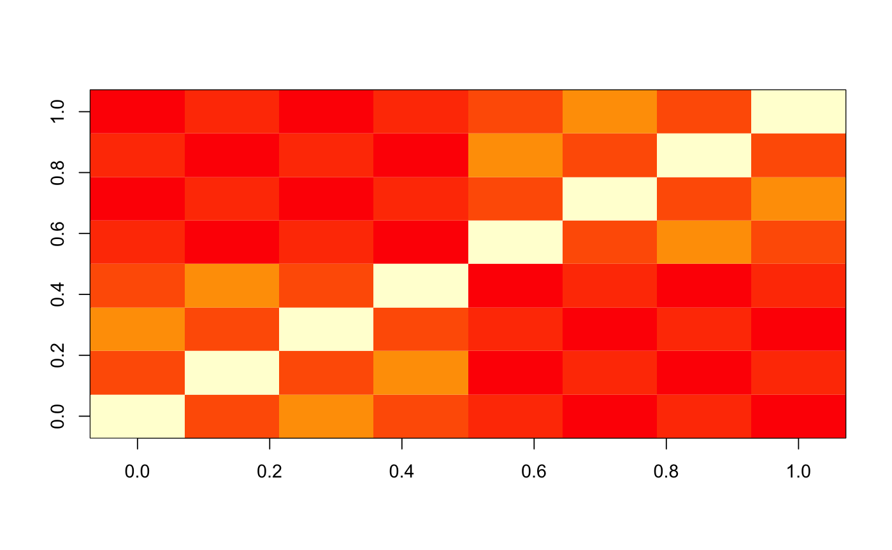

simulateFactorModelNullsFromSingularValuesAndLoadings
Simulate null hypotheses according to a factor model
simulateFactorModelNullsFromSingularValuesAndLoadings(m, h = numeric(0), P = Matrix(nrow = m, ncol = length(h)), rho = 0)
Arguments
| m | Number of tests |
|---|---|
| h | A vector of |
| P | A |
| rho |
|
Value
a vector of m simulated observations
a
vector of k factors
Examples
m <- 10 ## independent sim0 <- simulateFactorModelNullsFromSingularValuesAndLoadings(m) str(sim0)#> List of 2 #> $ Y: num [1:10] 0.0849 -0.3214 1.5988 0.2338 0.0112 ... #> $ W: num(0)sum(is.na(simulateFactorModelNullsFromSingularValuesAndLoadings(m)))#> [1] 0## equi-correlated rho <- 0.2 h <- 1 P <- matrix(1, m, length(h)) sim1 <- simulateFactorModelNullsFromSingularValuesAndLoadings(m, h, P, rho=rho) str(sim1)#> List of 2 #> $ Y: num [1:10] 0.0417 -1.1801 -1.2148 0.5372 1.4538 ... #> $ W: num -1.16## 3-factor model m <- 4*floor(m/4) ## make sure m/4 is an integer rho <- 0.5 h <- c(0.5, 0.3, 0.2)*m gamma1 <- rep(1,m) gamma2 <- rep(c(-1, 1), each=m/2) gamma3 <- rep(c(-1, 1), times=m/2) P <- cbind(gamma1, gamma2, gamma3)/sqrt(m) sim3 <- simulateFactorModelNullsFromSingularValuesAndLoadings(m, h, P, rho=rho) str(sim3)#> List of 2 #> $ Y: num [1:8] 0.0206 0.8754 1.0036 1.3749 -1.685 ... #> $ W: num [1:3] -0.483 -0.492 1.952sim3#> $Y #> [1] 0.0206385 0.8753720 1.0036203 1.3748594 -1.6849857 0.2321329 -1.1952904 #> [8] -0.1050630 #> #> $W #> [1] -0.4834969 -0.4922307 1.9521329 #>